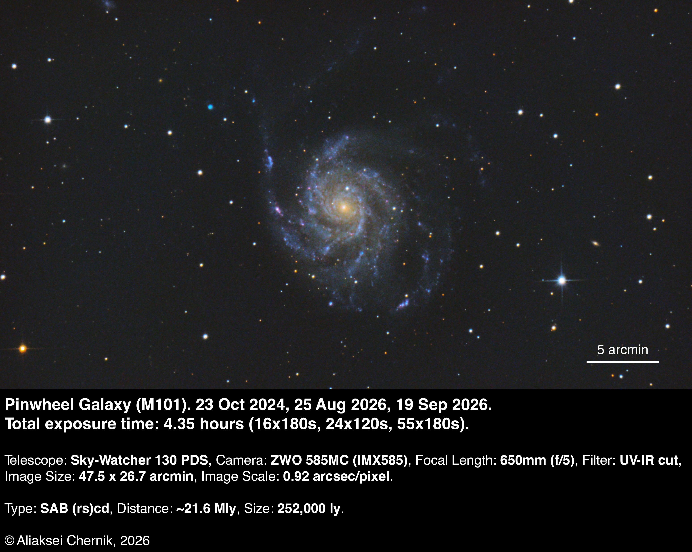
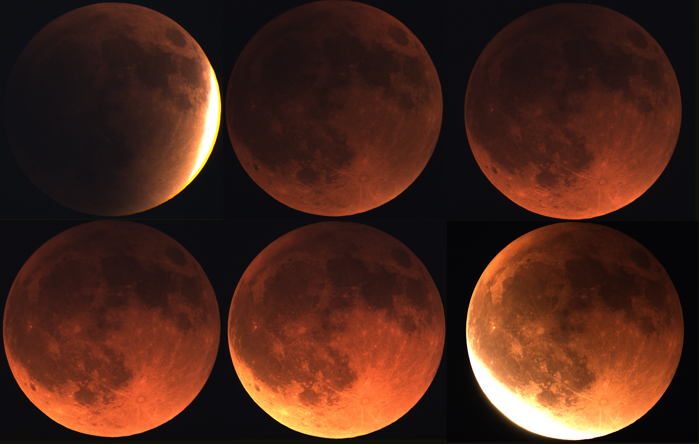
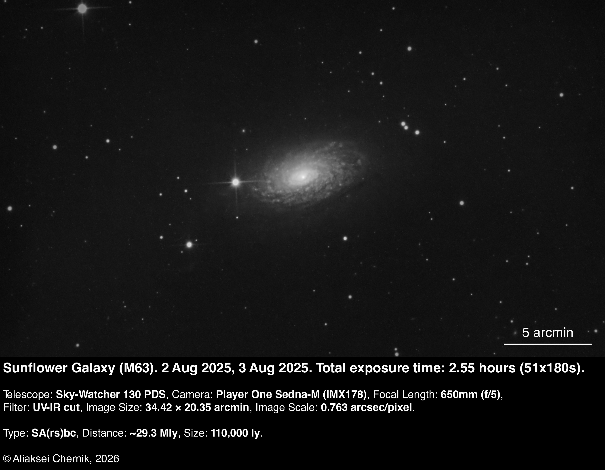
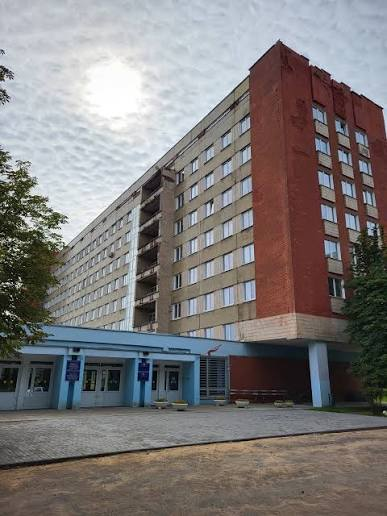

Hi! I'm Aliaksei Chernik,
amateur astronomer and cybersecurity student.
I photograph deep-sky objects, planets and comets, and study information security.
Astronomy
Amateur astrophotography from Belarus. Deep-sky objects, planets, comets and the Moon, mostly shot with a Sky-Watcher 130PDS reflector. Below are some of my favourite captures.



Lunar Eclipse
2025.09.07 | Sky-Watcher 130PDS | ZWO 585MC

Comet C/2023 A3 (Tsuchinshan-ATLAS)
2024.10.18 | Sky-Watcher 130PDS | ZWO 585MC | 48.5 minutes (97 × 30 s)


M 63 - Sunflower Galaxy
Asteroid (186822) 2004 FE31
Animation of the movement of an asteroid in 2.4 hours

I came across this asteroid by chance — browsing predicted flyby lists and plugging names into Stellarium. During the shoot I wasn't sure it would even show up: wrong coordinates? Too faint? I was lucky to get 2.5 hours of clear sky that night. After a quick stack I saw no trail, gave up, and moved on. Next morning, with a fresh head, I learned ASTAP can detect asteroids in an image — and it showed the asteroid was there, just invisible to the eye. Then I found out it can also stack on a specific object's motion, and that's how this image was born.
It reminded me of the "Pale Blue Dot" — Voyager photographing Earth as it left the Solar System. A similar feeling: this faint point is a lone kilometer-sized rock that has orbited the Sun for billions of years, and will keep orbiting for billions more. But that night, some of the photons it reflected happened to hit my telescope's mirror, then my camera sensor, knocking electrons out of silicon atoms — which, once digitized, became this image. This cosmic traveler is sending us a greeting. Space is closer than we think.
Cybersecurity

4th-year student at the Faculty of Radiophysics and Computer Technologies, Belarusian State University (BSU), majoring in Cybersecurity. Throughout my studies I have built a solid theoretical foundation in IT and information security. Key knowledge and skills: understanding of the core principles of information security (confidentiality, integrity, availability). Knowledge of operating system architecture and computer network design. Basic skills in network modelling with Cisco Packet Tracer.